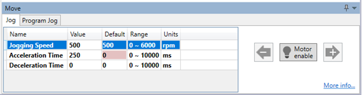
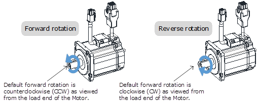
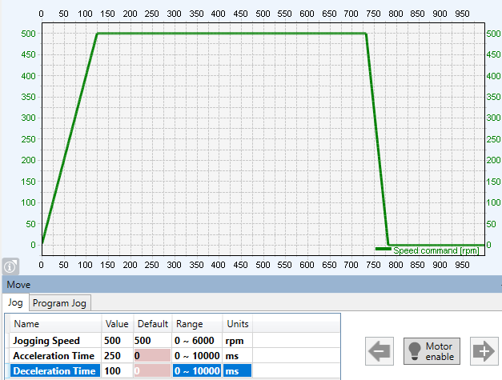

During jogging, overtravel detection on the drive is disabled (P-OT, N-OT).
Consider the range of motion of the machine when the Jog function is used.
The Jog function allows the operation of the drive and motor to be tested without running a program on the controller. Typically, this is used during off-load commissioning.
The jog motion is a velocity profiled move. It has no end point so will generate continuous motion in a specific direction. The velocity profile is defined by acceleration, speed and deceleration value and will generate a trapezoidal velocity profile.
|
|
During jogging, overtravel detection on the drive is disabled (P-OT, N-OT). Consider the range of motion of the machine when the Jog function is used. |
Always confirm the following before you perform the motion tests.
• The main circuit power supply must be ON.
• There should be no active alarms.
• The drive must not be in Safe State (STO function should allow the drive to be enabled).
• The servo must be OFF.
• The jogging speed must be set considering the operating range of the machine.
The jog move panel shows the parameters that control the motion.

The motion profile is controlled three parameters:
Click and hold the arrow buttons to run the motor. The jog motion is continuous; while the button is pressed the motor will run in the direction of the arrow. The motor will stop when the button is released.
The ‘+’ arrow will cause forward rotation, the ‘-‘ arrow will cause reserve rotation.

The rotation direction of the Motor depends on the setting of Pn001.0 (CCW, CW). The figure above shows the default setting.
The graph below shows an example of jog motion.
